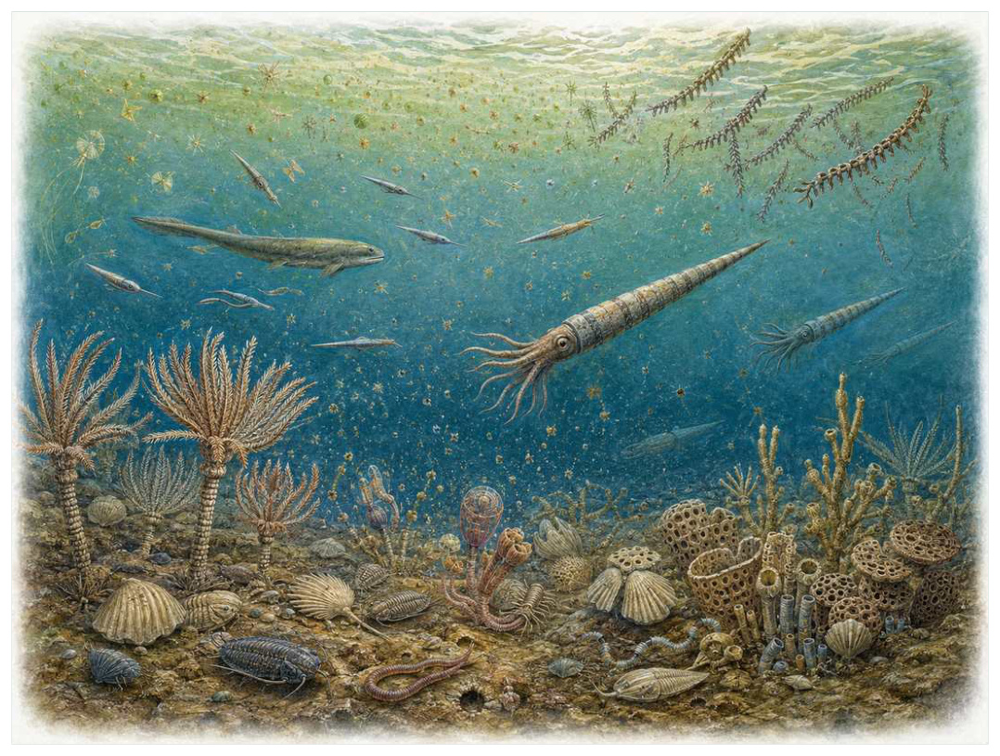

第05篇 · 奥陶纪：海洋生命第一次大繁荣 · 第 14 章
从海底到水柱：奥陶纪完整食物网
本篇主题:奥陶纪：海洋生命第一次大繁荣
寒武纪之后的第二次多样化浪潮与更成熟的海洋生态系统。

本章科学复原配图 （用于呈现结构与生态关系, 不替代化石照片、测量数据与系统发育证据。）
奥陶纪中晚期对应的世界与现代地图和气候都不同。理解它不能从一只明星物种开始，而应从整个系统的限制开始。奥陶纪海洋的变化不只是物种数量增加，而是能量在水柱和海底之间流动的路径变多。浮游植物支持浮游动物，滤食者在不同高度截取颗粒；大型头足类和早期有颌脊椎动物的近亲占据更主动的游泳生态位。海底礁体则把平面环境变成立体城市。
进入这个时代
生态系统的真实声音不是巨兽咆哮，而是持续的摄食、分解、搬运和繁殖。每一具尸体、每一层落叶和每一次沉积扰动都会重新分配资源。在温暖浅海，一片海百合‘草地’把取食臂伸入水流。苔藓虫和海绵固定在硬底，腕足动物覆盖较软沉积物。远处直壳头足类缓慢调姿，三叶虫在礁缝和海底寻找食物。
在“从海底到水柱：奥陶纪完整食物网”所覆盖的时间里，不能把地理与气候当作固定背景。海陆位置、海平面、河流或植被结构会改变资源可达性，同一性状在不同地区可能得到完全相反的选择结果。
以从海底到水柱：奥陶纪完整食物网为例，生态位不是预先摆好的空格，而是生物与环境共同形成的关系。掘穴者改变沉积物，森林固定河岸，礁体构建者制造硬底，巨型植食者改变火与养分。生物占据生态位的同时也在制造新的生态位。 在本章中，这一约束具体落在“滤食高度分层减少直接竞争”这条关系上。
再从奥陶纪中晚期的时间尺度看，环境变化首先作用于生理边界。温度改变酶反应和耗氧量，氧气决定持续活动余量，酸碱度影响骨骼和外壳材料，水分则限制气体交换与胚胎发育。只有跨过这些底层约束，捕食和竞争才有机会决定谁占优势。 它与“群体模块化”共同决定了后续变化可以沿哪些路径发生。
生态系统如何运转
把“滤食高度分层减少直接竞争”放进食物网，可以看到它不是孤立行为。它会影响种群密度、栖息地使用和尸体进入分解链的速度，并把后果传给并未直接参与互动的物种。
围绕“滤食高度分层减少直接竞争”，还要考虑空间异质性。一项在浅海、河谷或林冠有效的策略，移到深水、干旱内陆或开阔地便可能失去优势。因此同一支系常出现区域性扩张，而不是全球同步取代。 对从海底到水柱：奥陶纪完整食物网而言，这一后果还会与“浮游群落把初级生产输送给远离海底的消费者”相互放大或抵消。
理解“浮游群落把初级生产输送给远离海底的消费者”需要区分个体事件与长期压力。偶然一次捕食只改变个体命运，持续数千代的稳定关系才可能推动牙齿、外壳、感觉器官或生活史发生方向性变化。
围绕“浮游群落把初级生产输送给远离海底的消费者”，这一机制也会留下间接证据：咬痕、修复伤、足迹密度、粪化石、牙齿磨损和群落年龄结构分别记录不同环节。只有多种证据方向一致，行为解释才应上调可信度。 对从海底到水柱：奥陶纪完整食物网而言，这一后果还会与“礁体工程师改变水流、底质和幼体定居”相互放大或抵消。
“礁体工程师改变水流、底质和幼体定居”还会改变可利用空间。一个支系若能进入新的水深、植被高度或沉积层，竞争会暂时减弱；随后追随者、捕食者和寄生者又会把新空间变成新的互动网络。
围绕“礁体工程师改变水流、底质和幼体定居”，从演化树看，相似关系可能在远亲中反复出现。功能相近不必意味着近缘，而同一祖先结构也可能被后代改作完全不同的用途；生态解释必须与系统发育互相校验。 对从海底到水柱：奥陶纪完整食物网而言，这一后果还会与“滤食高度分层减少直接竞争”相互放大或抵消。
关键演化创新
在“从海底到水柱：奥陶纪完整食物网”中，围绕“群体模块化”，讨论“群体模块化”时，最重要的问题是它解除哪一道限制。只要原有身体在运动、摄食、呼吸或繁殖上受约束，能够稍微缓解约束的变异就可能积累，最终产生看似跃迁的结果。它首先需要在奥陶纪中晚期的生态条件下产生可测量收益。
就“群体模块化”而言，化石能较可靠地记录硬组织形态，却很少直接保留基因调控与短时行为。因此结构出现通常可信，最初用途和选择路径则应按证据标为主流解释或合理推测。 本章把它与“浮力调节”并列，是为了显示复杂性状往往依赖多部分协同。
在“从海底到水柱：奥陶纪完整食物网”中，围绕“浮力调节”，从共同选择角度看，“浮力调节”可能先服务旧功能，后来才参与今天最熟悉的用途。把最终功能倒推成起源原因，会把演化误写成有目的的工程。 它首先需要在奥陶纪中晚期的生态条件下产生可测量收益。
就“浮力调节”而言，其宏观影响往往滞后于结构起源。一个创新可以先在小型、稀少支系中存在数百万年，直到环境变化或竞争者灭绝后才迅速扩张；“出现”和“成为主导”是两个不同事件。 本章把它与“更复杂的滤食结构”并列，是为了显示复杂性状往往依赖多部分协同。
在“从海底到水柱：奥陶纪完整食物网”中，围绕“更复杂的滤食结构”，讨论“更复杂的滤食结构”时，最重要的问题是它解除哪一道限制。只要原有身体在运动、摄食、呼吸或繁殖上受约束，能够稍微缓解约束的变异就可能积累，最终产生看似跃迁的结果。 它首先需要在奥陶纪中晚期的生态条件下产生可测量收益。
就“更复杂的滤食结构”而言，这也提醒我们不要寻找单一关键基因。复杂性状由多个组织和调控网络协调，改变任何一环都可能产生不同结果，演化路径因此呈树状而非直线。 本章把它与“群体模块化”并列，是为了显示复杂性状往往依赖多部分协同。
生命群像：把物种放回生态网络
内角石（Endoceras）
在这一章的生命群像里，内角石（Endoceras）不能只当作图鉴名称。它出现于中晚奥陶世，体型大约大型种可达数米，主要生活方式是大型游泳或近底捕食者；直壳内有特殊沉积结构，可能帮助配重和姿态控制则说明身体怎样围绕这一生活方式进行组合。
对内角石而言，成年体型往往主导复原，但幼体可能使用完全不同的食物和栖息地。若成长阶段跨越多个生态位，种群就同时依赖多套环境；其中任一环节中断都可能导致长期衰退。化石骨床的年龄结构因此比单具最大标本更能说明生态。这使“直壳内有特殊沉积结构，可能帮助配重和姿态控制”不能脱离其大型游泳或近底捕食者角色来理解。
科学家并未直接看见它生活，依据是巨大体型估算依不完整壳体，游泳速度和生活水深仍不确定。现代类比可以帮助提出可检验模型，却不能取代化石；越具体的短时行为，越需要痕迹、内容物或重复病理等直接线索。
由内角石这个案例看，这个案例还提醒我们，亲缘和生态角色是两件事。近亲可以因资源分化而外形迥异，远亲也能因相似压力而趋同。把它放在演化树和食物网两个坐标中，才不会误写成线性进步。 它在中晚奥陶世留下的记录，因此同时是第14章所讨论的形态史和生态史的一部分。
巨型板足鲎早期类群（megalograptid eurypterids）
从外形看，巨型板足鲎早期类群（megalograptideurypterids）最容易被记住的是大型螯肢动物显示节肢捕食者继续扩张。它生活在晚奥陶世，大小约可达一米左右，承担浅海或河口捕食者这一生态功能。把年代、体型和功能放在一起，才能避免把奇特形态当成无意义装饰。
对巨型板足鲎早期类群而言，这种生活方式还会反向塑造环境。摄食改变植物或猎物结构，足迹和掘穴改变沉积，尸体和排泄物把营养集中到局部。生态位不是它进入的固定房间，而是它与其他生物共同建造并持续修改的关系网络。 这使“大型螯肢动物显示节肢捕食者继续扩张”不能脱离其浅海或河口捕食者角色来理解。
证据核心是保存多为外骨骼，是否完全海生及具体捕猎方式因种而异。化石记录更擅长回答“结构是什么”，较难回答“每天怎样行动”。足迹、胃内容物、咬痕或胚胎若存在，会显著缩小推测范围；若只有零散骨骼，行为叙述就必须更克制。
由巨型板足鲎早期类群这个案例看，它所代表的身体方案后来可能消失，也可能被远亲以不同材料重新发明。生命史因此既有可重复的功能解，也有不可复制的谱系路径。两者结合，才解释现代生物为何既熟悉又偶然。 它在晚奥陶世留下的记录，因此同时是第14章所讨论的形态史和生态史的一部分。
海百合（crinoids）
海百合（crinoids）是奥陶纪辐射至今的一名真实生态成员，而不是通往后代的抽象过渡。它约有厘米至米级含柄，以抬高取食臂的悬浮滤食者的方式获取资源；五辐对称和水管系统适合从水流捕获颗粒反映了其祖先历史与局部选择压力共同留下的结果。
对海百合而言，相似环境可能让远亲出现相近轮廓，但内部结构会保留祖先限制。比较它与现代类比时，应只借用可检验的功能，不把现代动物的行为、社会制度或代谢水平整套复制到古生物身上。这使“五辐对称和水管系统适合从水流捕获颗粒”不能脱离其抬高取食臂的悬浮滤食者角色来理解。
判断它的生活方式时，研究者首先使用化石常解体为小骨片，完整群落需要快速埋藏。随后会检验替代解释：同样的牙是否也能处理其他食物，同样的骨骼比例是否由年龄造成，同一骨层是否来自群体生活还是灾难性聚集。排除过程比贴标签更重要。
由海百合这个案例看，过去的复原常受完整现代动物模板影响，新材料则迫使研究者接受更陌生的身体比例或生活方式。最稳妥的表达是保留估计区间，并明确哪些软组织、颜色和社会行为仍属合理推测。 它在奥陶纪辐射至今留下的记录，因此同时是第14章所讨论的形态史和生态史的一部分。
星甲鱼类（arandaspids）
若把镜头从时代拉近到个体，星甲鱼类（arandaspids）会首先进入视野。它生活于奥陶纪，体型约约10至20厘米。作为近底或水层中的无颌滤食/摄食者，它依靠头部甲片和脊索轴显示早期脊椎动物已在海洋分化与环境和其他生物发生关系。
对星甲鱼类而言，它既可能是捕食者、植食者或工程者，也同时是其他生物的猎物、竞争者和分解资源。一次取食只是一瞬，长期生态影响来自成千上万个体反复搬运营养、改变植被或扰动沉积物。体型越大，这种工程效应通常越明显，但恢复速度也常越慢。 这使“头部甲片和脊索轴显示早期脊椎动物已在海洋分化”不能脱离其近底或水层中的无颌滤食/摄食者角色来理解。
关于它的直接依据是：口部与鳃篮软组织少保存，生态解释较为宽泛。研究者还必须确认骨骼是否属于同一个体、是否被水流搬运、压扁是否改变比例，以及不同大小是否只是成长阶段。只有解剖、地层和功能证据相互一致，复原才可上调为高可信。
由星甲鱼类这个案例看，它在生命史中的价值不在于离现代形态还有多远，而在于证明这一身体组合曾真实可行。即使没有直系后代，支系也可能在当时持续繁盛，并通过捕食、植食或栖息地工程改变其他生命的选择环境。它在奥陶纪留下的记录，因此同时是第14章所讨论的形态史和生态史的一部分。
三叶虫Isotelus（Isotelus）
三叶虫Isotelus（Isotelus）存在于中晚奥陶世。现有材料显示其大小约可达几十厘米，生态位置接近大型海底爬行者。宽扁体形和蜕壳记录显示三叶虫仍占重要生态位让它成为理解本章主题的合适案例，但不意味着同一类群所有成员都采用相同策略。
对三叶虫Isotelus而言，成年体型往往主导复原，但幼体可能使用完全不同的食物和栖息地。若成长阶段跨越多个生态位，种群就同时依赖多套环境；其中任一环节中断都可能导致长期衰退。化石骨床的年龄结构因此比单具最大标本更能说明生态。这使“宽扁体形和蜕壳记录显示三叶虫仍占重要生态位”不能脱离其大型海底爬行者角色来理解。
现有认识建立在大型个体不自动等于捕食者，可能杂食或摄食沉积物之上。古生物学的可信度不是来自一件戏剧化标本，而是来自多件标本、多个地点和不同方法得到相容结果。新发现若改变比例或分类，并非此前研究毫无价值，而是证据边界被重新画清。
由三叶虫Isotelus这个案例看，从生态尺度看，它与本章其他成员共同维持一张网络。任何“最强”排名都会遗漏资源供应、幼体死亡、疾病和气候脉冲；真正决定长期成功的是种群能否在波动中不断完成繁殖。 它在中晚奥陶世留下的记录，因此同时是第14章所讨论的形态史和生态史的一部分。
因果链：环境、生态与性状
本章的因果链最终落在繁殖上。“浮游群落把初级生产输送给远离海底的消费者”改变个体获得资源和避开风险的方式，“群体模块化”改变身体能做什么，但只有这些差异持续影响配子、胚胎、幼体和成体留下后代的概率，演化频率才会跨世代变化。内角石和巨型板足鲎早期类群的化石常让人关注尺寸或武器，然而巢、蛋、芽孢、孢粉、幼体壳和成长线往往更接近选择真正发生的位置。理解从海底到水柱：奥陶纪完整食物网，因此要把最壮观的成年结构重新接回完整生活史。
把“群体模块化”拆成成本与收益，可以避免把演化创新写成无条件升级。它可能扩大摄食、运动或繁殖的边界，却要付出组织材料、发育协调和日常维持的代价；“浮力调节”又会改变这笔账在不同生命阶段的分配。对内角石而言，直壳内有特殊沉积结构，可能帮助配重和姿态控制在成年阶段或许十分醒目，但种群能否延续仍取决于幼体是否能找到食物、是否有安全的生长场所以及环境波动后是否保留繁殖者。化石往往偏爱成年硬组织，因此书写奥陶纪中晚期时必须主动补上这些不易保存却决定长期命运的环节。
从时间顺序看，“群体模块化”的最早记录不等于它立即改写生态系统。结构可能先以小幅变异出现在稀少支系中，经历很长的试验期，直到“滤食高度分层减少直接竞争”所代表的资源条件或竞争格局改变，才出现可见的辐射。反过来，一个支系在化石记录中突然繁盛，也不证明关键结构刚刚产生；保存窗口打开、地理扩散或生态位释放都能造成类似图景。因此讨论奥陶纪中晚期的创新时，本章把“首次出现”“功能完善”“多样化”和“成为生态主导”分成四个问题，避免用一个日期替代整段历史。
在奥陶纪中晚期，身体不是若干部件的简单相加。“群体模块化”只有与“更复杂的滤食结构”在供能、控制和发育上兼容，才可能稳定遗传；局部性能提高若超过呼吸、循环或支撑能力，整体反而失效。海百合的五辐对称和水管系统适合从水流捕获颗粒因此应放进完整身体比例中解释，而不是把某一器官单独夸大。生物力学模型可以估算受力和运动范围，组织学能限制生长速度，近缘比较能提示同源关系；三者相互校验，才有可能从静态化石走向一个能够活着完成日常活动的动物或植物。
种群层面的成功还要考虑波动，而不仅是平均状态。在资源丰富年份，“浮力调节”带来的高性能可能迅速增加个体数；在低谷年份，维持该结构的成本又会放大死亡。若巨型板足鲎早期类群拥有较广食谱或可迁移，便可能跨过低谷；若其大型螯肢动物显示节肢捕食者继续扩张高度依赖单一环境，恢复就更困难。化石群落中的丰度峰值、体型变化和地理收缩能为这种“繁荣—压力—恢复”循环提供线索，但必须与采样偏差区分。对奥陶纪中晚期的任何稳态描述，都只是长期波动中被岩层保存的一小段。
时代横截面：个体、种群与证据
证据强度也应逐句区分。壳体生长线记录生长和季节若直接记录形态或行为痕迹，可把某些可能性排除；群落统计揭示不同水深组合若来自模型或现代类比，则通常提供范围而非唯一答案。对海百合的五辐对称和水管系统适合从水流捕获颗粒，我们也许能高可信地描述结构，却只能以主流解释讨论功能，以合理推测讨论日常行为。把层级写出来不会削弱故事，反而让读者知道未来新发现最可能改动哪一部分。
把结构看作模块，可以解释为什么过渡类型常显得“新旧并存”。内角石的直壳内有特殊沉积结构，可能帮助配重和姿态控制可能已经接近后来状态，而呼吸、繁殖或运动的其他部分仍保留祖征；巨型板足鲎早期类群可能采用另一种组合达到相似功能。演化不要求所有部件同步改变，只要求每个阶段的完整个体能够生活和繁殖。正因如此，真实谱系会产生旁支、回退和多次独立试验，而不是教科书式直梯。
再把海百合加入横截面，群落关系会从两者比较变成网络。它作为抬高取食臂的悬浮滤食者，通过五辐对称和水管系统适合从水流捕获颗粒连接资源与其他消费者；其数量变化可能同时影响内角石和巨型板足鲎早期类群，甚至改变分解链和营养循环。这样的间接效应很少能由一具骨架直接证明，却可以从物种共现、丰度、痕迹化石和环境指标中受到约束。从海底到水柱：奥陶纪完整食物网的生态复原因此需要群落数据，而不只是著名标本的精细解剖。
地理同样会拆散看似整齐的时代标签。奥陶纪中晚期并不是全球同时拥有同一种气候与群落：海盆深浅、纬度、山脉、河流和大陆隔离会让内角石、巨型板足鲎早期类群与海百合的分布错开。一个支系可能在某地区衰退、在另一地区成为避难所；后来扩散又会造成化石记录中的“重新出现”。因此本章的代表物种用于说明机制，而不意味着它们都在同一地点同一时刻相遇。
“谁取代了谁”常把复杂过程压成单线叙事。在从海底到水柱：奥陶纪完整食物网中，即使巨型板足鲎早期类群在某层位后减少、海百合随后增加，也可能是二者分别响应气候或栖息地，而不是直接竞争导致淘汰。需要检查时间误差、地理重叠和资源相似度；只有三者都支持，替代关系才更可信。更多时候，生态系统通过功能重新组合过渡，旧支系与新支系会长期并存。
科学家为什么这样判断
“壳体生长线记录生长和季节”提供的是一类约束而非完整录像。它可能精确记录某一瞬间，却未必代表全年或整个物种；也可能反映长期平均，却无法指出单次行为。把不同时间尺度的证据组合，才能重建生态过程。
“群落统计揭示不同水深组合”还需要与年代学绑定。只有事件先后关系可靠，才能讨论因果；若环境变化和生物响应的误差范围大量重叠，就应表述为相关或可能机制，而不是宣布已经证明。
“咬痕、胃内容物与功能形态约束捕食关系”最有价值的地方，是它能排除某些流行复原。关节不允许的姿势、承重无法支持的速度、与沉积环境冲突的生活方式，都可以被证据淘汰；剩余模型仍可能不止一个。
在“从海底到水柱：奥陶纪完整食物网”这一问题上，把上述方法合在一起，研究者才能从残缺材料走向受约束的复原。任何一条证据都可能受到成岩、污染、样本量或现代类比的限制；结论越具体，越需要多条独立证据指向同一方向，并与奥陶纪中晚期的地层背景相容。
过去的图景与今天的证据
直壳头足类常被描绘成奥陶纪唯一霸主，但体型、运动能力和食性差异很大；海洋顶端消费者也包括大型节肢动物。生态位不能仅凭‘最大’排序。
围绕“从海底到水柱：奥陶纪完整食物网”，需要特别警惕新闻标题把“可能”“支持”改写成“已经证明”。古生物学很少能直接观察行为，越接近颜色、叫声、群居和捕猎策略，越应说明样本数量与替代解释。
对奥陶纪中晚期的材料而言，争议持续还因为不同问题需要不同尺度。个体生物力学、种群生态和全球气候模型无法互相替代；一个模型能解释骨骼受力，不等于已经解释整个支系为何扩张或灭绝。
跨尺度观察
微生物底盘：宏体生态依赖微生物完成分解、固氮和碳硫循环。即使章节聚焦巨型动物，尸体最终仍由微生物和小型分解者处理；大灭绝后的恢复也往往先表现为生产和分解网络重建，而非大型动物立即回归。在“从海底到水柱：奥陶纪完整食物网”中，这一尺度具体连接了“滤食高度分层减少直接竞争”与“群体模块化”，因而不能只从单个成年标本判断。
尺度错觉：百万年足以让微小遗传差异累积成巨大的身体变化，数万年的快速事件又可在地质记录中近似一条细线。把深时间压缩会制造“突然出现”的错觉，因此正文同时报告持续时间和证据分辨率。 在“从海底到水柱：奥陶纪完整食物网”中，这一尺度具体连接了“浮游群落把初级生产输送给远离海底的消费者”与“浮力调节”，因而不能只从单个成年标本判断。
能量账本：任何大型身体、快速运动或高代谢都必须由初级生产支撑。食物从生产者进入消费者时会损失大量能量，因此顶级捕食者种群必然远少于猎物。环境变化若先削弱生产端，高营养级通常最早出现繁殖失败；这比单次搏斗更能决定支系命运。在“从海底到水柱：奥陶纪完整食物网”中，这一尺度具体连接了“礁体工程师改变水流、底质和幼体定居”与“更复杂的滤食结构”，因而不能只从单个成年标本判断。
通向下一个时代
从本章走向下一阶段时，需要保留的不是一串物种名，而是一个因果链：环境改变可用能量与栖息地，生态关系筛选性状，性状又反过来改造环境。这个繁盛世界将在晚奥陶纪遭遇快速冰期和海平面下降。危机先打击广阔浅海，再在回暖缺氧阶段造成第二轮损失。
本章精选来源
- [R31] Servais, T. et al. The Great Ordovician Biodiversification Event (GOBE): the palaeoecological dimension. Palaeogeography, Palaeoclimatology, Palaeoecology 294, 99-119 (2010).
- [R32] Harper, D. A. T., Hammarlund, E. U. & Rasmussen, C. M. Ø. End Ordovician extinctions: a coincidence of causes. Gondwana Research 25, 1294-1307 (2014).
- [R33] Benton, M. J. & Harper, D. A. T. Introduction to Paleobiology and the Fossil Record, 2nd ed. Wiley Blackwell, 2020.